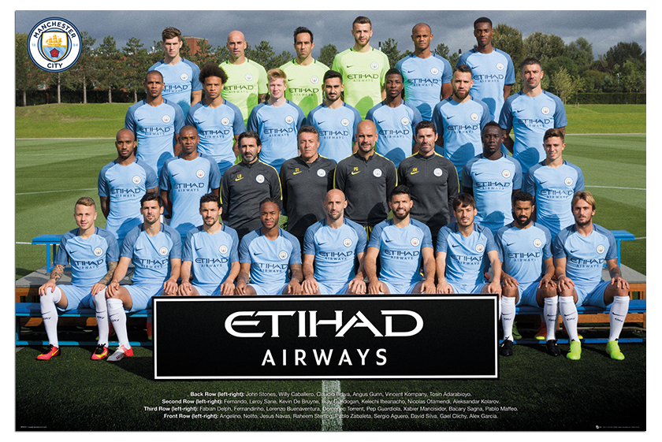
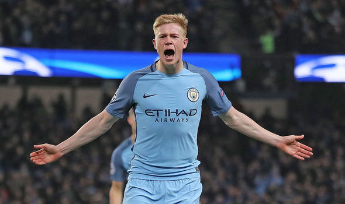
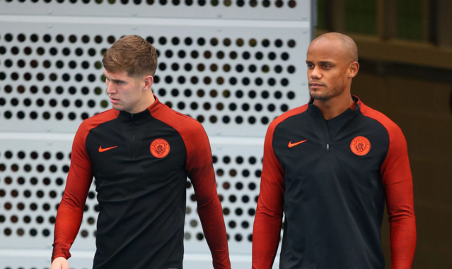

After the money they've spent, Guardiola will be expected to bring home the Premier League title.
Manchester City’s strong start last season was marred by a series of surprise results, goalkeeping nightmares and defensive instabilities, despite spending over £160m last summer and bringing Pep Guardiola to the Etihad, a man whose won 13 cub trophies.
He led them to a remarkable start – winning their first 10 games in all competitions and beating Jose Mourinho’s Manchester United at old Trafford in the process.
However, after all the high expectations, for the first time in his career Guardiola ended a whole season trophy-less, though they did managed to finish the season third.
Even though it guarantees Champions League football once again, they will surely hope to surpass the last-16 mark this season, and avoiding a midway exit in the EFL Cup, or even a late dismissal in the FA Cup.
This is a player who is given far less credit than he deserves in terms of his work-rate, assists, energy, track back ability and dangerous pin-point crossing to mention but a few.
Top-of-the-table Manchester City are playing to a tune conducted by De Bruyne and have found themselves top of the table as a result,with the Belgian proving unequivocally that he is the best player in the Premier League right now.During, the last eight weeks he has really established himself as player of the season.
Like last season, there is still a bit of uncertainty in defence, especially when Vincent Kompany is not there, as we’ve seen some improvements after his return at the end of last season.
This should also be the season for John Stones, who didn’t do what he was bought to do last season. His composure and ball-playing was supposed to stabilise the heart of the defence, but his inability to catch up with the high expectations after his heavy transfer fee cost both Manchester City and the player himself for that matter.
This season Stones has played a prominent role for City so far,starting 16 games across all competitions and helping the dominant leaders build an already unassailable-looking eight-point advantage at the top-flight summit.His good start to this season has come to a halt with a hamstring injury which means Guardiola will now have to rely heavily on Kompany and Mangala
This might just be the season for Manchester city to lift the premier league. The only team that can crush their dream of coming first is second placed Manchester United. City are the team to beat this season having so much pace and creativity in their team.